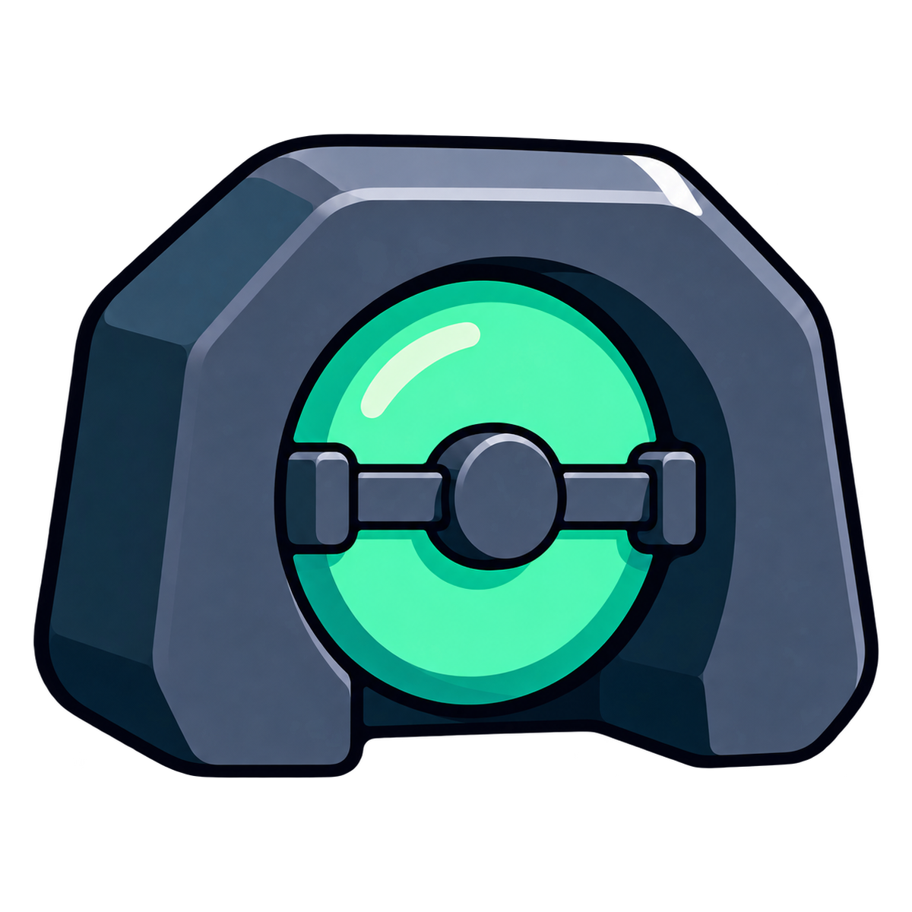

Inventory
Resolve native assets, fungible tokens, NFTs, approvals, roles and protocol positions by chain.
Map every asset. Verify a fresh destination. Build the migration sequence. Keep funds moving directly from your old wallet to your new one.

Read Ethereum state without connecting a wallet. The prototype checks account code, transaction nonce, native balance and block evidence through public RPC infrastructure.
We will compare source exposure with destination account state at a pinned Ethereum block.
Connect the source wallet only when you are ready. Add exact ETH, ERC-20, ERC-721 or ERC-1155 assets; BUNKER MODE WALLET verifies ownership or balance, keeps ETH last, and asks your wallet to approve each direct transfer.
Connection is user-initiated. BUNKER MODE WALLET never requests a seed phrase and never receives custody.
ERC-20 decimals, balances and NFT ownership are read live from Ethereum before the asset enters the plan. No unlimited approvals are used.
BUNKER MODE WALLET is an orchestration and verification surface. The default route never asks users to deposit assets into a protocol-owned contract.
Resolve native assets, fungible tokens, NFTs, approvals, roles and protocol positions by chain.
Order every action so dependent positions move first and native gas moves last.
The wallet shows the exact destination, value and encoded call before requesting approval.
Authenticate receipt identity and transaction fields, then flag unresolved steps.
The safest useful product does not require a custom contract. A bounded one-use migrator can exist later for compatible assets and advanced users.
Each asset moves from the source wallet directly to the verified fresh destination through standard token and protocol calls.
A one-use contract binds source, destination, assets, quantities and expiry before any approval is requested.
A migration is not complete when the largest balance moves. It is complete when every asset, permission and administrative responsibility is accounted for.
Withdraw, unwind or transfer supported DeFi positions.
Move ERC-20 balances with exact token and amount previews.
Transfer ERC-721 and ERC-1155 inventory to the destination.
Move ownership, multisig seats, guardians and access roles.
Revoke permissions that should not survive the migration.
Transfer the exact user-selected ETH amount after token and NFT steps.
Verify receipt identity, approved transaction fields and unresolved journal steps.
No project treasury sits between the source and destination. The product coordinates; the user's wallet executes.
The destination should not sign during setup. Users verify it through their trusted wallet or hardware device.
Every completed step resolves to a transaction hash and a mined receipt matching the approved transaction fields.